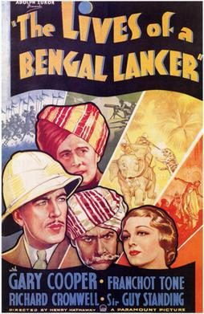

The Lives of a Bengal Lancer

Starring: Gary Cooper, Franchot Tone, Guy Standing
Director: Henry Hathaway
Writer: John L. Balderston, Achmed Abdullah, William Slavens McNutt
Producer: Louis D. Lighton
The Lives of a Bengal Lancer is a 1935 American adventure film starring Gary Cooper, directed by Henry Hathaway, and written by Grover Jones, William Slavens McNutt, Waldemar Young, John L. Balderston, and Achmed Abdullah. The setting and title come from the 1930 autobiography of the British soldier Francis Yeats-Brown.
Trivia
- Selected for the National Board of Review: Top Ten Films.
- Also nominated for: Academy Award for Best Picture; Academy Award for Best Director; Academy Award for Best Film Editing; Academy Award for Best Writing, Adapted Screenplay; and 2 more.
- Based on The Lives of a Bengal Lancer (autobiography of Francis Yeats-Brown).
- Among the filming locations were Lone Pine, Calif., Buffalo Flats in Malibu, Calif., the Paramount Ranch in Agoura, Calif., and the Iverson Movie Ranch in Chatsworth, Calif.
- For the climactic half-hour battle sequence at the end of the film, an elaborate set was built in the Iverson Gorge, part of the Iverson Movie Ranch, to depict Mogala, the mountain stronghold of Mohammed Khan.
Filming Locations
- Malibu
Previous Showings
2 Runs • 0 Festivals
Original Billings: 1 run (February 10, 1935)
Original Run: February 10, 1935 (Sunday - Tuesday)
All runs on record (2):
- February 10, 1935 (Sunday - Tuesday)Gary Cooper, Franchot Tone
- August 9 - 12, 1997w/ Desire